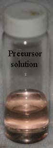
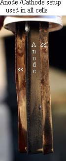
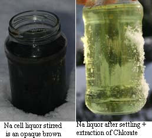
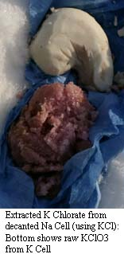
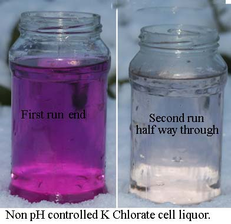

|


The MnO2 Anode works well in a non-pH controlled Potassium Chlorate cell where it gives %CE's in the fifties and lasts quite a long time. A 10 coat Anode has been shown to last 46 days or so at varying current densities up to 100mA per square cm (XENOID). A number of Manganese Dioxide (on etched Grade 1 Titanium) Anodes were prepared in order to explore how well the Anode holds up in a pH controlled cell and also to ascertain if there is any need for the Co Oxide undercoat. Some patents have used Mn Dioxide which was formed on bare (etched) Ti.
All Anodes that were tested were of similar surface area and shape. They each consisted of five coats of Mn Dioxide baked at 390°C for approx. 10 minutes per coat. The Anode was brushed with a tooth brush between bakes to remove any loose Mn Dioxide. One Anode had two coats of Co Oxide applied to the Ti first and was used in a Sodium Chlorate cell.
The Mn Dioxide precursor solution consisted of 60 grams wet Mn Nitrate crystals in 50ml water. The Manganese Nitrate was made my reacting Manganese metal with 70% Nitric acid and evaporating off the excess liquid until mostly solid crystals were obtained.
Some Sodium Chlorate cells was set up to test the Anodes.
The current density was 50mA per square cm, cell volume was one litre of saturated NaCl solution. Power supply was a constant current type and 2.51 Amps was ran into the non pH controlled cells. The pH controlled cell has a slightly smaller Anode and 2.2 Amps was ran into it. The cells ran cool at an average of approx. 27°C. Sometimes it went as low as 10°C and up to 35°C. They were stirred from time to time using a magnetic stirrer. The Cathodes (two) were approx. 20% larger than the Anode if both sides of the Cathodes were counted as Cathode area. This was a rather low current density on the Cathodes. Cell Voltages were noted and used as to indicate the state of wear of the Anode.

Mn Dioxide on bare TiThe first Anode tested was one of the simple five coat Mn Dioxide Anodes in a non-pH controlled Na Chlorate cell and it lasted a total of 30 days. The Voltage across the cell at the start was 4 Volts. Six days later it was 4.8 Volts. It increased over the next 15 days to 5.1 Volts. The cell contents were then changed to fresh NaCl solution. The cell Voltage when the fresh cell was started was 5.30 Volts. The Voltage continued to rise over the next 9 days to 6.5 Volts. The Anode was deemed to be 'finished' at this Voltage though it appeared to be still functioning OK. The Voltage had risen a Volt or so in the last two days of operation. %CE was ascertained by titration and found to be only 28%. The reason for this low CE is unknown at the present time and will be investigated further. Perhaps there is large amounts of Cathode reduction taking place. Cathodes are SS and coated with a brown/black deposit. The colour of the electrolyte never became pink as shown and described by XENOID's cells. There was a brown colour in the working cell after a few days and this brown stuff sank to the bottom of the container once the cell ceased operation and clear liquid with a yellow tinge could be poured off.
Mn Dioxide Anode with Co Oxide undercoatThe next Anode tested had two coats of Co Oxide + five coats of Mn Dioxide and lasted a total of 20 days. It was placed into a cell of the same type and conditions as the Anode above (Na, no pH control). The solution became a pink colour soon after the cell was started and remained for approx. 7 days giving way to the brown colour. Cell Voltage at the start of the run was 3.9 Volts, 4.4 Volts at 9 days, 5.6 Volts at 15 days and 7.5 Volts at 20 days (end of Anode). CE was 26% with Chloride concentration high throughout the run.There is no point applying Cobalt Oxide undercoat to the Manganese Dioxide Anode, in fact it appears to be a distinct disadvantage.
|
Mn Dioxide on bare Ti with pH controlA pH controlled Na cell was set up similar to the above two (Na) cells. The Anode lasted for a total of 64 days. A pink colour appeared soon after the cell was started and remained for approx. 10 days. A brown suspension was then dominant. Water was used to top up the cell. Voltage across the cell is shown in graph below. Current efficiency was low at 52% for the first 10 days (cell contents titrated) and was approx. 43% for the first 22 days (CE ascertained by adding KCl and weighing K Chlorate produced). The overall CE was 52%. The pH was in the region of 8 which was a bit high. 0.18ml of 12% HCl per Amp per hour was added to the cell.A fresh batch of NaCl solution was placed into the cell on day 22 and day 47.
|
pH control with MnO2 Anodes in Potassium Chlorate cellsSince the MnO2 Sodium cells above give very poor %CE some Potassium Chlorate cells was set up to see if they would fair any better. Conditions were similar to the Na cells above with a KCl solution used. The solution was not saturated at the working temperature of the cells (approx. 27°C) but was made before hand and had dropped to as low as Zero °C so it was not very concentrated.
Mn Dioxide Anode in a Potassium Chlorate cell, no pH control  A Potassium Chlorate cell was set up with no pH control. Current efficiency was 46% for the first 13.5 days. A fresh cell with new KCl solution was then started. CE was measured by simply weighing the solid Potassium Chlorate that accumulated on the cell bottom. The cell give no brown discolouration for the first two runs (only clear pink) but as time went on the brown colour became more and more prevalent. Strangely enough there was no brown suspension in the last run with clear liquid (no pink) and white K Chlorate. It appears that the brown suspension was coming from the Cathodes. Why it did not appear for the first two runs and the last run is unknown. KCl solution was used to top up the cell.Cell Voltage was a shown in the graph. The solution was changed on day 15, 41, 57, 77 and 98 CE averaged at around 47% and varied from 36% to 54% (47% on the last run). The Anode lasted for a total of 97 days with the Voltage rising slowly as the Anode failed. |
Mn Dioxide Anode in a Potassium Chlorate cell, with pH controlA pH controlled K Cell of similar construction to the above cells was set up. The Anode was run at a higher current density of 80mA/cm squared to hurry things along (a mistake IMO). CE averaged over the three runs at 70% (70%, 75%, 65%). Brown suspension appeared in the last run of the cell. KCl solution was used to keep cell toped up. The cell Voltage hovered in the region of 5.4 Volts and failed abruptly after rising to 6.2 Volts. Since cell runs were so short the cell spent quite a lot of time at a non-ideal pH as it is difficult to keep pH at 6.8 at the start of cells runs. Extra acid was added at cell run starts (first two days) in an attempt to keep pH where is should be. The Anode was expected to last quite a long time, at least as long as a non pH controlled K cell working at a similar Anode CD. It is difficult to say if the short life of the Anode is due to pH control or the greater Anode CD.
|
A distinct difference between Na and K cells was observed with K cells giving much greater %CE. The star performer was the non pH controlled K cell.
Current density that is best to use is unknown but around 50 mA per square cm seems to be a good working value. MnO2 Anodes may last the same amount of Ampere Hours and give similar %CE if used at a higher current density.
K cells give much clearer solutions when harvesting Chlorate when compared to Na cells. As the K cells progress brown suspension starts to appear. The brown suspension must be coming from the Stainless Steel Cathodes in both K and Na cells with much more appearing in Na cells. The liquor (opaque brown) from the last run of the pH controlled Potassium Chlorate cell was filtered after extracting all solid Chlorate. The brown filtrate was washed, dried and weighed and found to be 2.33 grams. It's a very small amount of material for the large looking mess it makes. Strangely enough the very last run of the non pH controlled K cell give clear liquid and clean white K Chlorate!
| Summary of Manganese Dioxide Anodes | ||||||
|---|---|---|---|---|---|---|
| All Anodes had similar dimensions. Current density on Anodes = 50mA/square cm with 80 used in pH controlled K cell. Temperature of
cells varied a lot due to weather (10-30°C). 12% HCl used for pH control. All cells had a volume of 1 litre. End of Anode life was deemed to be when cell Voltage went up to 7.0 Volts approx. (and rising fast). The
precursor MnO2 solution was a 50% solution of Manganese Nitrate in water. All Anodes were baked 5 times for 10 minutes at the same
temperature of 390°C with two extra bakes for Co Oxide coats on first Anode. The grade 1 Ti used was etched in 20% HCl before applying coatings. SS steel Cathodes (two) of approx. 20% larger surface area than (counting both sides of Cathodes) the area of Anode used (rather low CD on Cathodes). Type of SS unknown. No additives (Chromate's etc) used in cells. Small amounts of Perchlorate appeared in cells during the runs. | ||||||
| Cell salt | Sodium cells | Potassium cells | ||||
| pH control | NO | YES | NO | YES | ||
| Anode coating | 2 Co Oxide + 5 MnO2 | 5 Coats MnO2 | 5 Coats MnO2 | 5 Coats MnO2 | 5 Coats MnO2 | |
| Anode CD, mA/cm2 | 50 | 50 | 50 | 50 | 80 | |
| Total days running | 20 | 30 | 64 | 97 | 28 | |
| Current Efficiency | 26% | 28% | 52% | 46% | 70% | |
| Cell liquor changes | None | None | Two | 5 | 3 | |
| Notes | Brown suspension in cell at end of run | Brown suspension in cell at end of run | Brown suspension in cell at liquor changes | Pink colour for first liquor changes. Brown suspension followed Last run clear | Clear for first runs Brown suspension last run | |
|
Failed attemptA solution of Manganese Nitrate was made by dissolving 23 grams watery Manganese Nitrate Crystals in 100ml of Ethanol. This solution was an Orange colour as shown in the picture. The Manganese Nitrate was made from the Metal + 60% Nitric acid. A piece of etched Ti was painted, dried using a heat gun and baked at 380°C 10 times with the solution. The Anode formed was put into a Chlorate cell where it only lasted approx. 8 hours at a current density of 50mA per square cm. The solution was deemed to at too low of a percentage Mn Nitrate and the 10 coatings has not enough thickness. There was no loose MnO2 on the Titanium needing to be rubbed off between each bake as happens when a 50% solution (using water) is used. This procedure was similar to a procedure from US 4072586 though the final weight of the coating per square meter was unknown. |
HIT THE BACK BUTTON ON YOUR BROWSER